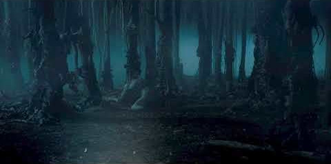
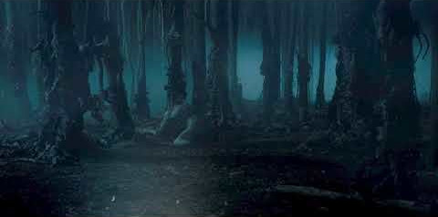
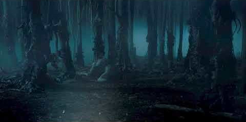
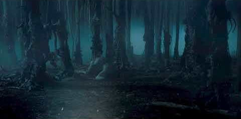

Galhos retorcidos debruçam-se no chão seco, parece difícil respirar.
Will se vê diante de uma floresta escura e enevoada.
Ele caminha alguns metros e encontra um frasco e um ponto luminoso.
Você bebe o frasco ou investiga o ponto luminoso?
1 - ponto luminoso
2 - frasco